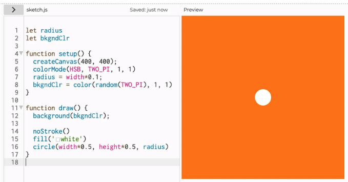
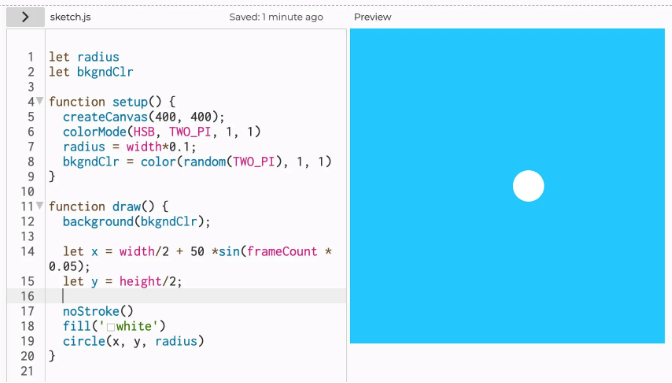
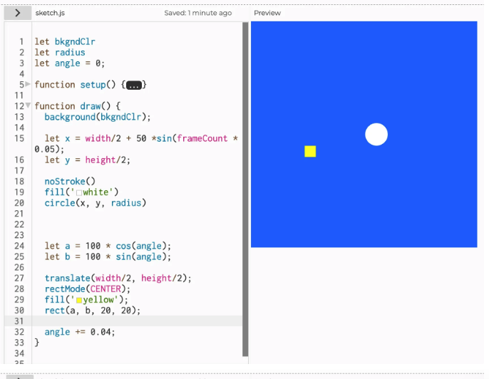
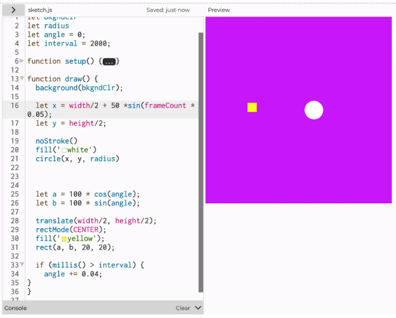
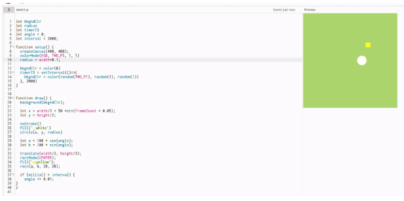
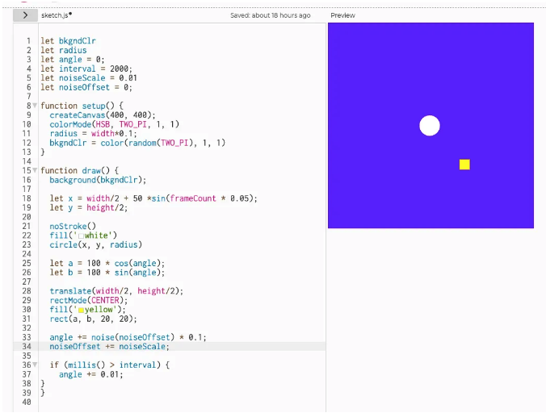
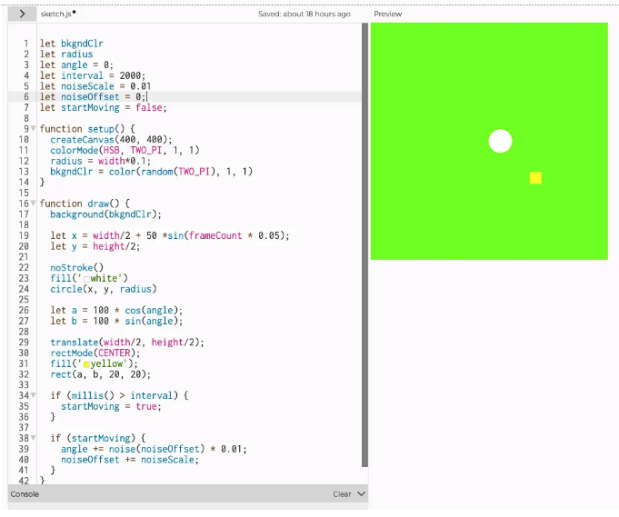

1. Background color: To allow the background to change randomly whenever I click the play button, I wrote the code: random(TWO_PI), 1, 1. The reason that I wrote 1 was to make the background color changed in terms of saturation and brightness between 0 and 1.
2. Circle: I draw a circle in the middle of the screen using the code (width * 0.5, height * 0.5) and set the radius to width * 0.1.
3. Trigonometric function: I used the 'sin' function to move to the right first. I only input values for the x-direction to change only the x-coordinate. To start from the center of the canvas, I first input width/2 and height/2. I multiplied frameCount by 0.05 to make it move slowly. -to make the period of the sine wave longer.
4. Trigonometric function for the rectangle: Both sine and cosine are used to make the rectangle rotate in a circular motion. The value 100 is multiplied to allow it to rotate along a circle with a radius of 100 pixels.
5. Interval = 2000: This is set to make the rectangle start rotating after 2 seconds.
 6. To make the background color changed as time goes by, I wrote the code: if (frameCount % 120 === 0) { bkgndClr = color(random(TWO_PI), 1, 1);
7. Perlin Noise: To make the movements smooth and natural, I added the perlin noise function. Retrieved the noise value based on the current noiseOffset and added it to the angle.
 